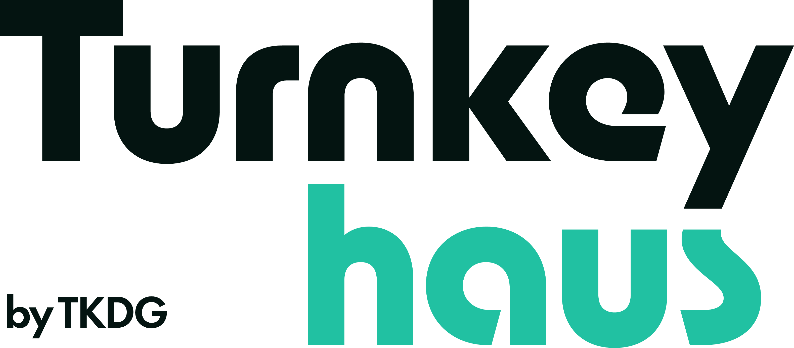

체형을 설계하는 한의원
단순 감량이 아닌 체질 개선 중심의 근본 접근을 강조합니다.

Brand Strategy Proposal
채널 세팅부터 다시 설계합니다. 인위적인 병원 유튜브 포맷을 걷어내고 원장 성향 기반 상담형 콘텐츠 + 30–60초 숏폼 확산 구조로 예약 전환을 만듭니다.
실행안 보기01
현재 상태는 “못 만든 영상”의 문제가 아니라 브랜딩 구조와 전환 설계 부재의 문제입니다.
AS-IS 채널 실물 보기결론: 지금 필요한 건 “더 예쁜 편집”이 아니라 클릭-체류-전환 전체 구조의 재설계입니다.
02
핵심은 정보량이 아니라 내적 친밀감과 시각적 직관성입니다.
| 구분 | 기존 (AS-IS) | 2026 트렌드 (TO-BE) |
|---|---|---|
| 화법 / 톤 | 설명형 브리핑 | 원장 성향(말투/호흡/상담 스타일) 기반 자연스러운 상담형 톤 |
| 영상 길이 | 6~10분 롱폼 위주 | 숏폼 중심 + 숏폼을 받쳐주는 롱폼 |
| 후킹 방식 | 자극 카피 텍스트 | 공감 상황 + 자연 후킹 |
| 썸네일 문법 | 전단지형 텍스트 과다 | 얼굴/표정 중심 클린 썸네일 |
03
모호한 콘셉트를 제거하고 병원의 진짜 무기를 전면화합니다.
단순 감량이 아닌 체질 개선 중심의 근본 접근을 강조합니다.
위고비/마운자로 이후 한방 다이어트의 보완 포인트를 선명하게 제시합니다.
전문성과 공감이 함께 느껴지는 상담소 콘셉트로 친밀감을 만듭니다. (운영 방식에 맞춰 출연 구조 최적화)
남성 뱃살/탈모 라인으로 신규 타깃의 예약 동선을 확보합니다.
GLP-1 이후 다이어트 전략
위고비/마운자로 이후 한방 다이어트의 보완 포인트를 사례 기반으로 설명정체기 돌파 실전 가이드
체중 정체 구간에서 생활습관·시술·식단 조합을 어떻게 조정해야 하는지 제시남성 복부/탈모 특화 솔루션
남성 타깃에서 반응 높은 고민을 중심으로 상담형 콘텐츠를 운영체질별 맞춤 접근
개인 체질/생활패턴을 고려한 맞춤 플랜 설계 과정을 쉽게 전달시술 전후 의사결정 포인트
내원 전 가장 많이 묻는 질문을 기준으로 시술 선택 기준을 정리실제 상담 케이스 리뷰
가명 기반 사례 설명으로 신뢰를 높이고 예약 전환을 유도04
예쁜 영상이 아니라 시청자 → 환자 전환 구조를 만듭니다.
강의형 일방 전달 탈피
클린 썸네일 규칙 적용
숏폼 확산 퍼널 구축
STEP 01
강의형에서 상담형으로 전환. 라운지/소파 세팅으로 심리적 거리 축소.
STEP 02
텍스트를 1~2개 키워드로 축소하고 원장 표정을 메인으로 배치해 CTR 강화.
STEP 03
비포/애프터 시각 변화 중심 숏폼을 대량 발행해 신규 유입 모수 확대.
05
제작 효율과 타깃 선명도를 동시에 높이는 3축 운영안입니다.
A. 검색형
위고비 부작용, 정체기 등 검색량 높은 키워드를 선점합니다.
B. 전환형
세로코/새살침 전후 비교 숏폼으로 즉시 문의를 유도합니다.
C. 브랜딩형
원장 성향 기반 리뷰/비하인드로 지속 구독 이유를 만듭니다.
06
우리는 같은 인물/같은 주제를 써도, 문법을 바꿔 CTR과 완주율을 동시에 올리는 방향으로 설계합니다.
AS-IS
텍스트가 화면을 과도하게 점유하고 콘셉트가 타깃 니즈와 연결되지 않아 클릭과 체류가 동시에 약해집니다.
TO-BE
타깃을 찌르는 카피 1줄과 자연스러운 표정/제스처 중심 프레이밍으로 클릭률과 공감도를 동시에 확보합니다.
썸네일 CTR
AS-IS 2~4% → TO-BE 6~8% 목표
완주율/체류
도입 7초 후킹 + 상담형 전개로 이탈 구간 단축
예약 전환 추적
고정 링크/댓글/설명란 UTM으로 문의 유입 100% 추적
07
90일 안에 테스트, 증폭, 최적화를 완료합니다.
새 앵글/세트 기반 롱폼·숏폼 혼합 테스트로 채널 인상 전환
반응 높은 포맷을 중심으로 대량 발행하여 도달량 급상승
유튜브 → 네이버예약/카카오톡 문의 전환율 측정 및 최적화
Week 1 · 채널 진단/세팅
타깃 진단, 채널 톤앤매너, 썸네일 가이드, CTA 동선 기준을 확정합니다.Week 2 · 대본 기획/리허설
원장 성향 기반 상담형 대본을 설계하고 롱폼/숏폼 파생 구조를 점검합니다.Week 3 · 집중 촬영
월 2회 촬영 중 1차 세션을 진행해 롱폼 원본과 숏폼 소스를 함께 확보합니다.Week 4 · 편집/발행/초기 최적화
첫 발행 데이터(CTR/완주율/문의)를 확인해 다음 달 포맷을 보정합니다.08
09
병원 채널에서 실제로 반응하는 포맷과 톤을 데이터로 검증하며 운영합니다.
잦은 담당 교체를 최소화해 채널 톤앤매너와 실행 속도를 안정적으로 유지합니다.
현직 금융사 직원, 공인중개사 등 자문 네트워크를 통해 콘텐츠 표현의 깊이를 보강합니다.
조회수 중심이 아닌 예약 문의·내원 전환 관점에서 KPI를 설계하고 개선합니다.
1차 기획
실제 상담 질문과 고빈도 고민을 콘텐츠 주제로 구조화2차 전문가 검토
표현 리스크와 오해 가능 포인트를 실무 관점에서 점검3차 표현 교정
대중이 이해하기 쉬운 언어로 변환하고 메시지 밀도를 조정4차 최종 확정
원장 검수 후 발행하고 댓글/문의 대응 가이드를 연동10
파트너 채널의 초기 완성도를 빠르게 끌어올리기 위한 제작 인프라를 무상 지원합니다.
INFRA 01
강남권에 근접한 공간 혹은 원내 장비/조명 세팅을 지원하여 초기 영상 퀄리티의 일관성을 확보합니다.
INFRA 02
유튜브 채널의 첫인상과 썸네일 클릭률(CTR) 기여도를 즉각적으로 높이는 고품질 프로필 이미지를 지원합니다.
INFRA 03
영상 시청이 단발성에 그치지 않도록, 실제 내원을 유도하는 전환 동선 설계와 최적화된 예약 링크 환경을 세팅합니다.
11
월 청구 금액 (VAT 포함)
4,400,000원 / 월
공급가액 4,000,000원 + 부가세 400,000원 · 계약기간 12개월
Monthly Operating Plan
촬영 세션
월 2회
롱폼 1회 + 숏폼 1회 집중 촬영롱폼 업로드
4편
회당 8~10분 권장, 10분 이내 설계숏폼 업로드
8편
독립 숏폼 콘텐츠 월 8편롱폼 재편집 쇼츠
8~12편
롱폼 1편당 쇼츠 2~3편 이상 파생운영 구조 요약
운영 포인트: 월 최소 20편(롱폼 4 + 숏폼 최소 16)을 안정적으로 확보하는 구조
Length & Conversion Logic
롱폼
8~10분 (최대 10분)숏폼
45~90초 (최대 1분 30초)결론: 숏폼으로 유입을 만들고, 롱폼으로 신뢰를 완성하는 조합이 내원 상담 전환을 가장 안정적으로 만듭니다.
| 항목 | 월간 제공 내역 |
|---|---|
| 기획/디렉팅 | 전담 PD 배정, 타깃 맞춤 콘텐츠 기획안 설계 |
| 현장 촬영 | 월 2회 촬영 (롱폼 1회 + 숏폼 1회) 및 디렉팅 |
| 콘텐츠 발행 | 롱폼 4편 + 숏폼 8편 + 롱폼 재편집 쇼츠 8~12편 발행 |
| 채널 디자인 | CTR 최적화 썸네일 및 채널 아트워크 개선 |
| 퍼널 관리 | 예약 링크 고정, 유튜브 SEO 세팅, 전환 동선 관리 |
외부 광고비(예: 구글/메타) 집행 시 별도 협의. 기본 운영안은 롱폼 4편·쇼츠 최소 16편이며, 월간 이슈에 따라 세부 편수는 협의 조정 가능합니다.
※ 전담 PD, 촬영/편집, 썸네일 디자인, 채널 운영, 병원 마케팅 담당 등 최소 5인 이상 팀 단위로 운영됩니다.
12
Q. 촬영은 주로 어디서 진행되나요?
병원 내부 또는 접근성 좋은 스튜디오에서 월 2회, 회당 2~3시간 집중 촬영으로 진행합니다.Q. 광고비 비율은 어떻게 운영하나요?
본 제안은 콘텐츠 중심 구조입니다. 먼저 유기적 성과 데이터를 안정화하고, 필요 시 성과형 광고를 별도 협의로 최소 집행합니다.Q. 원장님이 준비해야 할 대본 가이드는?
실제 상담 질문을 기준으로 문제 정의 · 원인 · 해결 프로세스 · 행동 유도 순서로 템플릿화해 준비하시면 됩니다.Q. 90일 내 체감 가능한 지표는 무엇인가요?
조회수보다 상담 연결 지표를 우선 봅니다. 예약 링크 클릭률, 문의 댓글 품질, 상담 전환 키워드가 먼저 개선됩니다.13
목표는 명확해졌습니다.
가로세로한의원 강남점에 맞는
상담형 유튜브 브랜딩을 지금 시작합니다.
내년 이맘때는 “무엇을 올릴까”가 아니라
“어떤 환자를 우선 상담할까”를 논의하게 됩니다.